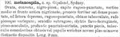

Click on images to enlarge
{kind=link}

Fig. 1. Paropsis melanospila, description
Name
Paropsis melanospila Chapuis, 1877
Corresponds to
Possibly conspecific with Ta171, but see Diagnosis and Notes below.
Diagnosis and Notes
Blackburn (1896) did not see the type specimen of P. melanospila, but he would have seen specimens compared to the type and thus includes it in his key. He deals with melanospila as part of his 'subgroup ii' (i.e., those species without "strongly marked characters", whose greatest height is not or scarcely in front of the middle of the elytral margin and whose elytra are depressed under the humeral callus). Within that group, he characterises it as:
A. Inner edge of humeral callus distinctly nearer to lateral margin of elytra than to suture;
B. Sides of prothorax more or less explanate;
C. Elytra not having well-defined continuous costae;
D. Puncturation of the elytra not particularly fine;
E. Upper surface of elytra in general, or at least the verrucae, black or nearly so;
F. Explanate margins of prothorax wide (each about 1/3 of width of discal part);
G. Postbasal impression of elytral disc feeble;
H. Prothorax at its widest at the middle.
Blackburn separates this species from T. piceola by its "explanate margins of the prothorax wide (each about 1/3 of width of discal part)". Yet he places P. regularis in this group, whose typical specimens do not have explanate margins as wide as that.
A specimen of Ta171 in the Peter Kelly collection had an identification label of T. melanospila (though without attribution). Chapuis gives Gipsland (sic) and Sydney as localities. The size of 9mm given in Chapuis’ description is certainly well within the size range of Ta171. However the description of colours and elytral structure does not fit Ta171 so well, and thus there is considerable doubt as to whether Ta171 is the same species as melanospila. The assignment of this name must therefore tentative, since Chapuis’ very brief description could fit several other species and requires an examination of the holotype specimen to be sure. A "T. melanospila" label was also attached to a specimen of Ta76 by Peter Kelly. Ta76 is a mallee species that does not occur in eastern Victoria and it is very unlikely to be melanospila.
Type specimen
Not examined.
Original description
Translation of original description (Figure 1) by ChatGPT, 03/2026:
Oval, convex, black-pitchy. Head rugose-punctate; the middle of the vertex and the front shining black. Pronotum rather strongly and densely punctured, depressed toward the sides, rugose-punctate, with a blunt tubercle; reddish-pitchy and variegated. Scutellum slightly rugose. Elytra yellowish-ferruginous with pitchy spots; deeply punctate-striated; punctures pitchy; tubercles of the same colour, blunt and small, arranged in about nine more or less distinct rows. Length 9 mm.
References
Blackburn, T. 1896, "Revision of the genus Paropsis. Part I", Proceedings of the Linnean Society of New South Wales, vol. 21, no. 4, 637-693 (page 654).
Copyright © 2026. All rights reserved.